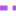
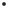

<!doctype html>
<html lang="en">
    <head>
        <meta charset="utf-8">
        <meta http-equiv="X-UA-Compatible" content="IE=edge">
        <meta name="viewport" content="initial-scale=1,user-scalable=no,maximum-scale=1,width=device-width">
        <meta name="mobile-web-app-capable" content="yes">
        <meta name="apple-mobile-web-app-capable" content="yes">
        <link rel="stylesheet" href="css/leaflet.css">
        <link rel="stylesheet" href="css/qgis2web.css"><link rel="stylesheet" href="css/fontawesome-all.min.css">
        <style>
        #map {
            width: 900px;
            height: 550px;
        }
        </style>
        <title></title>
    </head>
    <body>
        <div id="map">
        </div>
        <script src="js/qgis2web_expressions.js"></script>
        <script src="js/leaflet.js"></script>
        <script src="js/leaflet.rotatedMarker.js"></script>
        <script src="js/leaflet.pattern.js"></script>
        <script src="js/leaflet-hash.js"></script>
        <script src="js/Autolinker.min.js"></script>
        <script src="js/rbush.min.js"></script>
        <script src="js/labelgun.min.js"></script>
        <script src="js/labels.js"></script>
        <script src="data/CrashesCyclistsInjuredorDied_1.js"></script>
        <script src="data/BicycleRoutes_2.js"></script>
        <script src="data/SuggestedRoutes_3.js"></script>
        <script>
        var highlightLayer;
        function highlightFeature(e) {
            highlightLayer = e.target;
            highlightLayer.openPopup();
        }
        var map = L.map('map', {
            zoomControl:true, maxZoom:15, minZoom:9
        })
        var hash = new L.Hash(map);
        map.attributionControl.setPrefix('<a href="https://github.com/tomchadwin/qgis2web" target="_blank">qgis2web</a> &middot; <a href="https://leafletjs.com" title="A JS library for interactive maps">Leaflet</a> &middot; <a href="https://qgis.org">QGIS</a>');
        var autolinker = new Autolinker({truncate: {length: 30, location: 'smart'}});
        var bounds_group = new L.featureGroup([]);
        function setBounds() {
        }
        map.createPane('pane_BaseMap_0');
        map.getPane('pane_BaseMap_0').style.zIndex = 400;
        map.setView([40.694400,-73.928242], 13)
        var layer_BaseMap_0 = L.tileLayer('http://a.basemaps.cartocdn.com/light_all/{z}/{x}/{y}.png', {
            pane: 'pane_BaseMap_0',
            opacity: 1.0,
            attribution: '<a href="https://cartodb.com/basemaps/">Map tiles by CartoDB, under CC BY 3.0. Data by OpenStreetMap, under ODbL.</a>',
            minZoom: 9,
            maxZoom: 15,
            minNativeZoom: 0,
            maxNativeZoom: 20
        });
        layer_BaseMap_0;
        map.addLayer(layer_BaseMap_0);
        function pop_CrashesCyclistsInjuredorDied_1(feature, layer) {
            layer.on({
                mouseout: function(e) {
                    if (typeof layer.closePopup == 'function') {
                        layer.closePopup();
                    } else {
                        layer.eachLayer(function(feature){
                            feature.closePopup()
                        });
                    }
                },
                mouseover: highlightFeature,
            });
            var popupContent = '<table>\
                    <tr>\
                        <th scope="row">Cyclists Injured</th>\
                        <td>' + (feature.properties['Cyclists Injured'] !== null ? autolinker.link(feature.properties['Cyclists Injured'].toLocaleString()) : '') + '</td>\
                    </tr>\
                    <tr>\
                        <th scope="row">Cyclists Killed</th>\
                        <td>' + (feature.properties['Cyclists Killed'] !== null ? autolinker.link(feature.properties['Cyclists Killed'].toLocaleString()) : '') + '</td>\
                    </tr>\
                    <tr>\
                        <td colspan="2">' + (feature.properties['Crash Date'] !== null ? autolinker.link(feature.properties['Crash Date'].toLocaleString()) : '') + '</td>\
                    </tr>\
                </table>';
            layer.bindPopup(popupContent, {maxHeight: 400});
        }

        function style_CrashesCyclistsInjuredorDied_1_0(feature) {
            switch(String(feature.properties['Cyclists Killed'])) {
                case '0':
                    return {
                pane: 'pane_CrashesCyclistsInjuredorDied_1',
                radius: 1.6,
                stroke: false,
                fill: true,
                fillOpacity: 1,
                fillColor: 'rgba(43,43,43,0.9)',
                interactive: true,
            }
                    break;
                case '1':
                    return {
                pane: 'pane_CrashesCyclistsInjuredorDied_1',
                radius: 4.4,
                stroke: false,
                fill: true,
                fillOpacity: 1,
                fillColor: 'rgba(43,43,43,0.9)',
                interactive: true,
            }
                    break;
            }
        }
        map.createPane('pane_CrashesCyclistsInjuredorDied_1');
        map.getPane('pane_CrashesCyclistsInjuredorDied_1').style.zIndex = 401;
        map.getPane('pane_CrashesCyclistsInjuredorDied_1').style['mix-blend-mode'] = 'normal';
        var layer_CrashesCyclistsInjuredorDied_1 = new L.geoJson(json_CrashesCyclistsInjuredorDied_1, {
            attribution: '',
            interactive: true,
            dataVar: 'json_CrashesCyclistsInjuredorDied_1',
            layerName: 'layer_CrashesCyclistsInjuredorDied_1',
            pane: 'pane_CrashesCyclistsInjuredorDied_1',
            onEachFeature: pop_CrashesCyclistsInjuredorDied_1,
            pointToLayer: function (feature, latlng) {
                var context = {
                    feature: feature,
                    variables: {}
                };
                return L.circleMarker(latlng, style_CrashesCyclistsInjuredorDied_1_0(feature));
            },
        });
        bounds_group.addLayer(layer_CrashesCyclistsInjuredorDied_1);
        map.addLayer(layer_CrashesCyclistsInjuredorDied_1);
        function pop_BicycleRoutes_2(feature, layer) {
            layer.on({
                mouseout: function(e) {
                    if (typeof layer.closePopup == 'function') {
                        layer.closePopup();
                    } else {
                        layer.eachLayer(function(feature){
                            feature.closePopup()
                        });
                    }
                },
                mouseover: highlightFeature,
            });
            var popupContent = '<table>\
                    <tr>\
                        <th scope="row">Facility Class</th>\
                        <td>' + (feature.properties['Facility Class'] !== null ? autolinker.link(feature.properties['Facility Class'].toLocaleString()) : '') + '</td>\
                    </tr>\
                    <tr>\
                        <th scope="row">Facility</th>\
                        <td>' + (feature.properties['Facility'] !== null ? autolinker.link(feature.properties['Facility'].toLocaleString()) : '') + '</td>\
                    </tr>\
                </table>';
            layer.bindPopup(popupContent, {maxHeight: 400});
        }

        function style_BicycleRoutes_2_0(feature) {
            switch(String(feature.properties['Facility Class'])) {
                case 'I':
                    return {
                pane: 'pane_BicycleRoutes_2',
                opacity: 1,
                color: 'rgba(91,91,91,0.8)',
                dashArray: '',
                lineCap: 'square',
                lineJoin: 'bevel',
                weight: 2.0,
                fillOpacity: 0,
                interactive: true,
            }
                    break;
                case 'II':
                    return {
                pane: 'pane_BicycleRoutes_2',
                opacity: 1,
                color: 'rgba(138,138,138,0.8)',
                dashArray: '',
                lineCap: 'square',
                lineJoin: 'bevel',
                weight: 1.0,
                fillOpacity: 0,
                interactive: true,
            }
                    break;
                case 'III':
                    return {
                pane: 'pane_BicycleRoutes_2',
                opacity: 1,
                color: 'rgba(153,153,153,0.8)',
                dashArray: '',
                lineCap: 'square',
                lineJoin: 'bevel',
                weight: 1.0,
                fillOpacity: 0,
                interactive: true,
            }
                    break;
                case 'L':
                    return {
                pane: 'pane_BicycleRoutes_2',
                opacity: 1,
                color: 'rgba(153,153,153,0.8)',
                dashArray: '',
                lineCap: 'square',
                lineJoin: 'bevel',
                weight: 1.0,
                fillOpacity: 0,
                interactive: true,
            }
                    break;
            }
        }
        map.createPane('pane_BicycleRoutes_2');
        map.getPane('pane_BicycleRoutes_2').style.zIndex = 402;
        map.getPane('pane_BicycleRoutes_2').style['mix-blend-mode'] = 'normal';
        var layer_BicycleRoutes_2 = new L.geoJson(json_BicycleRoutes_2, {
            attribution: '',
            interactive: true,
            dataVar: 'json_BicycleRoutes_2',
            layerName: 'layer_BicycleRoutes_2',
            pane: 'pane_BicycleRoutes_2',
            onEachFeature: pop_BicycleRoutes_2,
            style: style_BicycleRoutes_2_0,
        });
        bounds_group.addLayer(layer_BicycleRoutes_2);
        map.addLayer(layer_BicycleRoutes_2);
        function pop_SuggestedRoutes_3(feature, layer) {
            layer.on({
                mouseout: function(e) {
                    if (typeof layer.closePopup == 'function') {
                        layer.closePopup();
                    } else {
                        layer.eachLayer(function(feature){
                            feature.closePopup()
                        });
                    }
                },
                mouseover: highlightFeature,
            });
            var popupContent = '<table>\
                    <tr>\
                        <td colspan="2">' + (feature.properties['id'] !== null ? autolinker.link(feature.properties['id'].toLocaleString()) : '') + '</td>\
                    </tr>\
                    <tr>\
                        <td colspan="2">' + (feature.properties['color'] !== null ? autolinker.link(feature.properties['color'].toLocaleString()) : '') + '</td>\
                    </tr>\
                </table>';
            layer.bindPopup(popupContent, {maxHeight: 400});
        }

        function style_SuggestedRoutes_3_0(feature) {
            switch(String(feature.properties['color'])) {
                case '0':
                    return {
                pane: 'pane_SuggestedRoutes_3',
                opacity: 1,
                color: 'rgba(180,85,231,1.0)',
                dashArray: '1,5',
                lineCap: 'square',
                lineJoin: 'round',
                weight: 4.0,
                fillOpacity: 0,
                interactive: false,
            }
                    break;
                case '22':
                    return {
                pane: 'pane_SuggestedRoutes_3',
                opacity: 1,
                color: 'rgba(247,34,130,1.0)',
                dashArray: '1,5',
                lineCap: 'square',
                lineJoin: 'round',
                weight: 4.0,
                fillOpacity: 0,
                interactive: false,
            }
                    break;
            }
        }
        map.createPane('pane_SuggestedRoutes_3');
        map.getPane('pane_SuggestedRoutes_3').style.zIndex = 403;
        map.getPane('pane_SuggestedRoutes_3').style['mix-blend-mode'] = 'normal';
        var layer_SuggestedRoutes_3 = new L.geoJson(json_SuggestedRoutes_3, {
            attribution: '',
            interactive: false,
            dataVar: 'json_SuggestedRoutes_3',
            layerName: 'layer_SuggestedRoutes_3',
            pane: 'pane_SuggestedRoutes_3',
            onEachFeature: pop_SuggestedRoutes_3,
            style: style_SuggestedRoutes_3_0,
        });
        bounds_group.addLayer(layer_SuggestedRoutes_3);
        map.addLayer(layer_SuggestedRoutes_3);
        var baseMaps = {};
        L.control.layers(baseMaps,{'Suggested Routes<br /><table><tr><td style="text-align: center;"></td><td>0</td></tr><tr><td style="text-align: center;"></td><td>22</td></tr></table>': layer_SuggestedRoutes_3,'Bicycle Routes<br /><table><tr><td style="text-align: center;"></td><td>Facility Class I</td></tr><tr><td style="text-align: center;"></td><td>Facility Class II</td></tr><tr><td style="text-align: center;"></td><td>Facılıty Class III</td></tr><tr><td style="text-align: center;"></td><td>L: Links</td></tr></table>': layer_BicycleRoutes_2,'Crashes - Cyclists Injured or Died<br /><table><tr><td style="text-align: center;"></td><td>Cyclists Injured</td></tr><tr><td style="text-align: center;"></td><td>Cyclists Killed</td></tr></table>': layer_CrashesCyclistsInjuredorDied_1,"Base Map": layer_BaseMap_0,},{collapsed:false}).addTo(map);
        setBounds();
        var i = 0;
        layer_SuggestedRoutes_3.eachLayer(function(layer) {
            var context = {
                feature: layer.feature,
                variables: {}
            };
            layer.bindTooltip((layer.feature.properties['id'] !== null?String('<div style="color: #f72282; font-size: 12pt; font-weight: bold; font-family: \'MS Shell Dlg 2\', sans-serif;">' + layer.feature.properties['id']) + '</div>':''), {permanent: true, offset: [-0, -16], className: 'css_SuggestedRoutes_3'});
            labels.push(layer);
            totalMarkers += 1;
              layer.added = true;
              addLabel(layer, i);
              i++;
        });
        resetLabels([layer_SuggestedRoutes_3]);
        map.on("zoomend", function(){
            resetLabels([layer_SuggestedRoutes_3]);
        });
        map.on("layeradd", function(){
            resetLabels([layer_SuggestedRoutes_3]);
        });
        map.on("layerremove", function(){
            resetLabels([layer_SuggestedRoutes_3]);
        });
        </script>
    </body>
</html>
